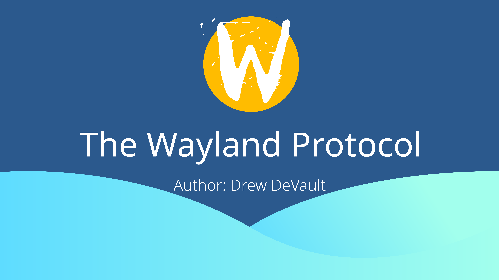

介绍
Wayland 是一个为了替代 Xorg 服务而设计和构建的，用于类 Unix 系统的下一代显示服务。并自称是将应用程序窗口显示在用户屏幕上的最佳方法。过去曾经使用过 X11 的读者会对 Wayland 的改进感到惊喜，而 Unix 上的图形新手将发现它是一个灵活而强大的系统，可用于构建图形应用程序和桌面。
这本书将会帮助您深入理解 Wayland 的概念、设计和实现，并为您提供构建自行构建 Wayland 客户端和服务端所需的工具。在阅读过程中，我们将构建 Wayland 的理想模型，并建立对其原理的认知。在这本书中，你能发现许多令你恍然大悟的时刻，Wayland 直观的设计让选择变得更加明确，有利于保持顺畅的阅读体验。欢迎来到开源图形的未来！
注意： 这还只是草案。第一到第十章基本已完成，可能后续会有所更新。第十一章及后续内容大部分有待撰写。
TODO
- Expand on resource lifetimes and avoiding race conditions in chapter 2.4
- Move linux-dmabuf details to the appendix, add note about wl_drm & Mesa
- Rewrite the introduction text
- Add example code for interactive move, to demonstrate the use of serials
- Use — instead of - where appropriate
- Prepare PDFs and EPUBs
关于这本书
本书采用 mdbook 构建，译者翻译水平有限，疑问请自寻原书解答，许可同源。
自译项目地址：repo
许可：Creative Commons Attribution-ShareAlike 4.0 International License
源码：repo
关于作者
用 Drew 紧密合作者 Preston Carpenter 的话来说：
Drew DeVault 从 sway（一个对广受欢迎的平铺式窗口管理器 i3wm 的克隆） 开启了自己的 Wayland 之路。 目前它俨然成为 Wayland 下最受欢迎的平铺式窗口管理器，无论是用户、提交数量还是影响力。随着它的成功，Drew 回到 Wayland 社区并开始 wlroots 的工作：一个用于构建 Wayland 混成器的灵活可组合的模块。如今它已经成为数十个混成器的基础，并且在 Wayland 领域 Drew 成为最重要的专家之一。
Wayland 的上层设计
你的电脑有输入和输出设备，它们各自负责接收你的信息并将其显示给你。输入设备例如：
- 键盘
- 麦克风
- 触摸板
- 触摸屏
- 数位板
而输出设备通常是桌面上的显示器、笔记本或其他移动设备的屏幕。这些显示资源在你的应用程序之间共用，而 Wayland 混成器在其中起到给客户端分派输入事件并在合适位置显示程序窗口的作用。将所有应用程序窗口组合在一起显示在屏幕上的过程被称为“混成”，因此我们将执行此操作的软件称作混成器。
现状
有许多不同的软件组成了桌面生态系统。诸如用于渲染的 Mesa 及其Linux KMS/DRM 子系统，负责缓存分配的 GBM (Generic Buffer Management 通用缓冲区管理)，用户空间库 libdrm, libinput, evdev 等。但是不用担心，理解 Wayland 几乎不需要具备这些体系的专业知识，并且这些内容都大大超出了本书范围。事实上，Wayland 协议是相当保守和抽象的，很容易就能构建出一个基于 Wayland 的桌面并且大多数软件无需额外实现什么就能运行。话虽如此，但从表面上理解这些部分是什么，以及它们是如何工作，仍是十分有用的。让我们自底向上逐步展开。
硬件部分
一台典型的计算机配备了一些重要的硬件。在机箱外面，我们还有显示器、键盘、鼠标，或许还有麦克风和一个可爱的 USB 保温杯。机箱内部有一系列与这些设备接口相连的组件。例如可能你的键盘和鼠标正在使用由系统专有控制器负责的 USB 接口，你的显示器正连接着 GPU。
这些系统有他们自己的任务和状态。例如，GPU 有以显存形式提供的像素缓冲区，并将这些像素扫描输出到显示器上。GPU 还提供经过特调整的处理器，它们虽然在其他方面有所不如，但可以很好地处理高度并行的任务（例如为 1080P 显示器上的 2,073,600 个像素计算正确的颜色）。USB 控制器的工作同样复杂的令人称奇，它要实现枯燥的 USB 规范以接受来自键盘的输入事件，或精心调控杯垫的温度，从而避免诉讼和让你感到不快的冷咖啡。
在这个层面上，硬件几乎不了解系统上正在运行哪些应用程序。硬件提供了执行工作的命令接口，并告知相应的操作——而不在乎是谁发出的。因此，只允许一个组件与之对话......
内核部分
这一责任落到了内核身上。内核是一头复杂的“野兽”，因此我们只关注与 Wayland 相关的部分。Linux 内核的任务是提供一个抽象的硬件，因此可以在用户态安全的访问它们，我们的 Wayland 混成器也同样运行在用户态。对于图形（称为 DRM 或直接渲染管理器 direct rendering manager）来说，可以在用户态有效地为 GPU 分配任务。DRM 另一个重要的子系统是 KMS（kernel mode setting），其用于枚举显示设备并为其设置属性，例如其选定的分辨率（也称为“模式”）。输入设备通过名为 evdev 的接口进行抽象。
大多数内核接口都可以以特殊的设备文件形式存在于 /dev 供用户态调用。以 DRM 为例，这些文件位于 /dev/dri/ 中，通常以主要节点 primary node（例如 card0）的形式进行特权操作（如模式设置），且以渲染节点 render node（如 renderD128）的形式进行非特权操作（如渲染或视频解码），而对于设备节点 device nodes 则为 /dev/input/event*
$ ls /dev/dri/
by-path card0 renderD128
用户态
现在我们来看用户态。在这里，应用程序于硬件隔离，必须通过内核提供的设备节点才能运行。
libdrm
大多数 Linux 内核接口都有一个对应的用户态，它为使用这些设备节点提供了令人满意的 C 语言 API。libdrm 库是其中之一，它是 DRM 子系统的用户态部分。Wayland 混成器使用它进行模式设置和其他 DRM 操作，但 Wayland 客户端通常不直接使用 libdrm。
Mesa
Mesa 是 Linux 图形栈中最为重要的部分之一。它除了为 Linux 提供 OpenGL（和 Vulkan）的厂家优化实现之外，还提供了 GBM（Generic Buffer Management）库，这是一种在 libdrm 之上的抽象层，用于在 GPU 上分配缓冲区。大多数 Wayland 混成器将通过 Mesa 同时使用 GBM 和 OpenGL，且多数客户端至少使用 OpenGL 或 Vulkan 其中一种实现。
libinput
如同 libdrm 是 DRM 子系统的抽象那样，libinput 提供了 evdev 用户态的抽象。它负责从内核接收输入设备的输入事件，将其解码为可用的形式，并传递给 Wayland 混成器。混成器需要特殊的权限才能使用 evdev 设备文件，从而迫使 Wayland 客户端通过混成器接收输入事件，这样可以防止键盘被记录等。
(e)udev
用户空间负责初步处理来自内核的新设备，在 /dev 中配置目标设备节点的权限，并将这些更改的信息发送给系统上正在运行的程序。大多数系统使用 udev（或 eudev）。Wayland 混成器使用 udev 枚举输入设备和 GPU，并在出现新设备或者拔出旧设备的时候接收通知。
xkbcommon
XKB（X Keyboard 的缩写）是 Xorg 服务的原始键盘处理子系统。几年前，开发者把它从 Xorg 代码树中提取出来，并做成了一个独立的键盘处理库且不再与 X 有任何实际的联系。Libinput（以及 Wayland 混成器）以扫描码的形式提供键盘事件，其准确含义因键盘而异。xkbcommon 负责将这些扫描到的码转化为有意义的通用键盘符号，如 65 转化为 XKB_KEY_Space。它还包含了一个状态机，该状态机知道在按住 shift 键的同时按下 “1” 会变成 “！”。
pixman
这是一个客户端和混成器都使用的简单库，其可以有效的处理像素缓冲区，使用相交的矩形进行数学运算，以及执行其他类似的像素操作任务。
libwayland
libwayland 是 Wayland 协议最常用的 C 语言实现，它处理许多底层的线协议。同时也提供了一个从 Wayland 协议定义（XML 文件）生成高级代码的工具。我们将在第 1.3 章以及整本书中详细讨论 libwayland。
其他
到目前为止，提到的每个部分在整个 Linux 桌面生态系统中都是一致的。而除此以外还有更多的组件。许多图形应用程序根本不了解 Wayland，而是选择诸如 GTK+、QT、SDL 和 GLFW 之类的库来进行处理。许多混成器选择像 wlroots 这样的软件来抽象它们所负责的部分，而其它的一类混成器则在内部实现所有功能。
目标和受众
我们的目标是让您从本书中了解到 Wayland 协议及其高级用法。您应该对 Wayland 核心协议中的所有内容有扎实的了解，并具有评估和实现生产中使用的各种扩展协议的必备知识。首先，这本书通过着重于 Wayland 的客户端来介绍其架构。此外，它也应该为 Wayland 混成器开发者提供一些实用的工具。
自由桌面生态系统十分复杂，并且由许多分离的部分所组成。我们将很少讨论这些部分——在这里你将不会找到关于在 Wayland 混成器中利用 libdrm 或者 libinput 处理 evdev 事件的信息。因此这本书不是构建 Wayland 混成器的综合指南。我们也不会讨论到图像绘制技术，如 Cairo、Pango、GTK+ 等，尽管它们对于 Wayland 客户端来说十分有用。因此，对于实际的 Wayland 客户端实现而言，这也不是一个可靠的指南。相反，我们只专注于 Wayland 的细节。
这本书只涵盖协议和 libwayland。如果你正在编写一个客户端，并且已经熟悉自己喜欢的 UI 渲染库，那么请带上自己的“像素”，我们将帮助您在 Wayland 上显示它们。如果你已经对操作混成器和输入设备所需的技术有所了解，那么本书将帮助您学习如何与客户端进行通信。
Wayland 软件包内容
当你在遵循 freedesktop.org 规范的 Linux 发行版中安装 "wayland" 的时候，很可能最后得到 libwayland-client、libwayland-server、wayland-scanner 和 wayland.xml 这些文件。它们或分别位于 /usr/lib、/usr/include、/usr/bin 和 /usr/share/wayland 中。该软件包代表了 Wayland 协议最主流的实现，但这并不是唯一的。第三章详细介绍了 Wayland 的实现；这本书其余部分同样适用于任何实现。
wayland.xml
Wayland 协议通过 XML 文件进行定义。如果定位到并在编辑器中打开了 "wayland.xml" 文件，你将会发现 Wayland 核心协议的 XML 规范。这是一个高级协议，它建立在我们在下一章将要讨论的线协议之上。本书的大部分内容致力于解释该文件。
wayland-scanner
"wayland-scanner" 工具被用于处理这些 XML 文件并生成对应代码，其最常用的实现正如你现在所见的 wayland-scanner，它可以用于从诸如 wayland.xml 之类的文件生成 C 头文件和上下文代码。在其它的编程语言中有对应的 scanner，如 wayland-rs (Rust)、waymonad-scanner (Haskell) 等。
libwayland
libwayland-client 和 libwayland-server 这两个库包含了一个双端通信线协议的实现，提供了一些常用的实用工具来处理 Wayland 的数据结构、简单的事件循环等。此外，这些库还包含 wayland-scanner 生成的 Wayland 核心协议的预编译副本。
协议设计
Wayland 协议是由多层抽象结构所构建的。它从一个基本的线协议格式开始（该格式是可用事先约定好的接口解码的消息流），然后用更高级别的程序来枚举接口，创建符合这些接口的资源，以及交换相关信息，这便是 Wayland 协议及其扩展的内容。且最重要的是，我们拥有了一些更宽泛的模式，这些模式在 Wayland 协议设计中经常用到。我们将在本章节中介绍所有相关内容。
让我们继续自下而上地学习。
基础线协议
注意： 如果你正打算使用 libwayland，那么本章节选读，可自由转跳到第 2.2 章节。
线协议是由 32 位值所组成的流，使用主机的字节顺序进行编码（例如 x86 系列 CPU 上的小端序）。如下表示原始类型的值：
- int, uint: 32 位有符号或无符号整型
- fixed: 24 位整数 + 8 位小数的定点数
- object: 32 位对象 ID
- new_id: 32 位对象 ID，收到对象时分配
除了上面这些基本类型之外，下面还有一些常用的类型：
-
string: 字符串，以 32 位整数为前缀，指定其长度（以字节为单位），而后是字符串内容和 NUL 终止符，并用未定义的数据填充满 32 位。没有指定编码，但实际上是使用 UTF-8。
-
array: 任意的数据块，以 32 位整形作为前缀按位指定其长度，随后是数组逐字内容和 NUL 结束符，用未定义的数据填充不满 32 位长度的部分。
-
fd: 主传输上的 0-bit 值，在 Unix 域套接字信息（msg_control）中使用辅助数据，将文件描述符从一段传输到另一端。
-
enum: 一个单独的值（或者 bitmap）用于枚举已知常量，编码为 32 位整形。
消息
线协议是使用这些原语构建而成的消息流。每个消息都是对 object 起作用的一个事（服务端到客户端）件或者请求（客户端到服务端）。
消息头由两个部分组成。第一个是起作用的对象 ID。第二个是两个 16 位值；高 16 位读音消息的大小（包括头本身），低 16 位事件或请求的操作码。其参数基于双方事先约定的消息签名。接收方查找对象 ID 以及由其操作码定义的事件或请求，以确定消息的签名和性质。
| msg header | ||
|---|---|---|
| object ID | msg size (upper 16bits) | code (lower 16bits) |
为了解析消息，客户端和服务端必须先创建对象。作为 Wayland 的显示单例已预先分配对象 ID，可用于引导其他对象。我们将在第四章中对此进行讨论，而下一章将讨论什么是接口，以及假设您已经协商了对象 ID 的情况下请求和事件是如何工作，下见后文。
对象 ID
当消息带着 new_id 参数来的时候，发送方将为其分配一个对象 ID（用于该对象的接口是通过其他参数建立的，或者是针对该请求或事件预先约定的）。此对象 ID 可以用在后续消息中使用，作为信息头的第一个字或者 object_id 参数。客户端从 1 到 0xFEFFFFFF 范围内分配 ID，服务端在 0xFF000000 到 0xFFFFFFFF 内分配 ID。ID 从下限开始，并随着每次新对象的分配而递增。
对象 ID 为 0 表示一个空对象；也就是说不存在对象或缺少显式声明。
传输
迄今为止，所有已知的 Wayland 实现都工作在 Unix 域套接字上。尤其是出于一个原因而使用它：文件描述符消息。Unix 套接字是能够在进程之间传输文件描述符的最为实用的传输方式，并且对于大量数据传输而言是十分必要的（主要如键映射、像素缓冲和剪贴板内容）。从理论上讲，可以使用其他传输方式（如 TCP），但需要有人来找出另一种传输块数据的方式。
要找到连接的 Unix 套接字，大多数实现只需要执行 libwayland 的操作：
- 如果已经设置了
WAYLAND_SOCKET，则说明已经在其上建立了文件描述符编号，并假设父进程为我们配置了连接。 - 如果已经设置了
WAYLAND_DISPLAY，则与XDG_RUNTIME_DIR路径连接以建立 Unix 套接字。 - 假定套接字名称为
wayland-0，并与XDG_RUNTIME_DIR路径连接以建立 Unix 套接字。 - 建议放弃。
接口、请求和事件
Wayland 协议通过发出作用于对象的请求和事件来工作。每个对象都有一个接口，定义了可能的请求和事件以及对应的签名。让我们来考虑一个简单的示例接口：wl_surface

请求
表层是可以在屏幕上显示的像素区域。这是我们构建诸如窗口应用程序的原始方法之一。它的请求之一是“销毁”(damage)，客户端使用它来表示表层的某些部分已经更改并需要重新绘制。下面是一个销毁信息的注释示例：
0000000A Object ID (10)
00180002 Message length (24) and request opcode (2)
00000000 X coordinate (int): 0
00000000 Y coordinate (int): 0
00000100 Width (int): 256
00000100 Height (int): 256
这是会话的一小部分——表层是较早分配的，并且分配的 ID 为 10。当服务端接收到这一消息时，它会查找 ID 为 10 的对象，并发现它是一个 wl_surface 的实例。知道这一点后，它将使用操作码 2 查找请求的签名。然后知道它需要以四个整数作为参数，且可以解码该消息并将其分派以进行内部处理。
事件
请求是对于客户端到服务端而言的，反之服务端可以给客户端发回送事件消息。服务端可以发送 wl_surface 的“输入”事件，当该表层在特定输出上显示时，服务端将发送该事件（客户端可以通过如调整 HiDPI 显示的比例系数来对此作出响应）
0000000A Object ID (10)
000C0000 Message length (12) and event opcode (0)
00000005 Output (object ID): 5
该消息通过其 ID 引用了另一个对象：wl_output，该对象正用于表层显示。客户端收到此消息后与服务端行为类似：查找 ID 为 10 的对象，将其与 wl_surface 接口关联，并查找与操作码 0 对应事件的签名。它相应地解码其余信息（还查找 ID 为 5 的 wl_output），然后将其分派给内部处理。
接口
接口用于事先定义请求和事件的列表，与每个请求相关联的操作码和解码消息所需的签名也都来自于其。我敢肯定你渴望知道如何实现接口——请看后文。
上层协议
在第 1.3 章节我们提到：wayland.xml 可能与 Wayland 软件包一同被安装到你的操作系统上。立即找到并用你偏好的编辑器打开该文件。通过这样的文件，我们定义了 Wayland 客户端或服务端所支持的接口。
$ pacman -F wayland.xml
usr/share/wayland/wayland.xml
文件中定义了每个接口，以及对应的请求、事件和各自的签名。为此，我们使用了 XML 格式。让我们看看上一章中讨论过的 wl_surface 示例：
<interface name="wl_surface" version="4">
<request name="damage">
<arg name="x" type="int" />
<arg name="y" type="int" />
<arg name="width" type="int" />
<arg name="height" type="int" />
</request>
<event name="enter">
<arg name="output" type="object" interface="wl_output" />
</event>
</interface>
注意： 为了简单起见，我已经对该代码进行了删减，但是如果你之前有找到 wayland.xml 文件（实际文件和上述示例略有不同），建议查找此接口并亲自检查一下——其中有额外的文档，这些文档解释了每个请求和事件的目的和精确的语义。
在处理此 XML 文件时，我们为每个请求和事件分配一个操作码（按照它们出现的顺序，零号开始，依次递增）结合参数列表，你可以解码来自线协议中的请求和事件，并且基于 XML 文件中的文档，你可以决定如何对软件进行编程以对应相应的行为。这一部分代码通常来自于代码生成器，我们将在第 3 章中讨论 libwayland 如何实现这一点。
而从第四章开始，本书其余大部分内容专门用于解释该文件以及一些补充的扩展协议。
协议设计准则
在大多数 Wayland 的协议设计中已经应用了一些关键性的概念，我们将在此简要介绍它们。在整个上层 Wayland 协议及其扩展协议中都可以找到这些准则（至少在 Wayland 协议中）。如果您正在编写自己当协议扩展，那么聪明的做法是借鉴这些准则。
原子性
Wayland 协议设计中最重要的准则就是原子性。Wayland 的既定目标是“每一帧都是完美的”。为此，大多数接口都允许以事务的方式进行更新，使用多个请求来创建一个新的表示状态，然后一次性提交所有请求。例如，可以在 wl_surface 上配置几个属性：
- 附加的像素缓冲区
- 需要重新绘制的变更区域
- 出于优化而不透明的区域
- 可接受输入事件的区域
- 变形，例如旋转 90 度
- 缓冲规模，用于 HiDPI
该接口为这些请求提供了独立的配置，但它们都处于挂起状态（pending）。仅当提交请求的时候，挂起状态才会合并到当前状态（current）。从而使您可以在单帧内原子地更新所有这些属性。结合其他一些关键性设计决策，Wayland 混成器可以在每一帧中完美地呈现所有内容——没有画面撕裂和窗口部分更新，每个像素都恰如其分地显示。
资源生命周期
另一个重要的设计准则是：避免服务端和客户端向无效对象发送相关事件或请求。于此，通过接口定义的事件和请求具有有限的生命周期，服务端和客户端也可以通过接口对其进行显式释放。只有当两边都先后同意才能释放对象所分配的资源。
Wayland 是一个完全异步的协议。它将保证消息按发送顺序送达，但仅仅针对一个发送者的情况。例如，当客户端决定销毁其键盘设备时，服务端可能会有多个输入事件正在排队。客户端必须正确处理不再需要的对象事件，直到服务端同步。同理，如果客户端在销毁对象前将一些不再需要的请求入队，则服务端必须以正确的顺序发送这些请求，以便在客户端同意销毁该对象后不再对其进行使用。
版本控制
关于 libwayland 的实现
我们在 1.3 节中介绍了 libwayland 这一最受欢迎的 Wayland 实现。本书的大部分内容适用于任何实现，但是接下来的两章将使你熟悉 libwayland。
Wayland 软件包包括用于 Wayland-Client 和 Wayland-Server 的 pkg-config 规范——请参阅构建系统的文档以获取有关它们的链接介绍。当然，大多数应用程序只会连接到其中一个。该库包含一些简单的原语（如链表）和 Wayland 的核心协议 ——Wayland.xml 的预编译版本。
我们将从原语开始介绍。
Wayland-util 原语
wayland-util.h 是客户端和服务端共同使用的库，它定义了许多结构、实用函数和宏，建立了一些用于 Wayland 应用程序的原语。其中包括：
- 生成用于 Wayland 协议消息结构化重组和解构的代码
- 链表
wl_list的实现 - 数组
wl_array的实现（装配到相应的 Wayland 原语） - 用于 Wayland 标量（如定点小数）和 C 类型转化的实用程序
- 调试记录工具，收集来自 libwayland 内部传出的消息
头文件包含了许多非常好的注解，您应该自己阅读该文件。在接下来的几页中我们将详细介绍如何运用这些原语。
wayland-scanner
Wayland 包中含有一个二进制文件：wayland-scanner。该工具基于 2.3 节中所提及的定义 Wayland 协议的 XML 文件来生成 C 头文件和对应的胶水代码。生成的头文件为 wayland-client-protocol.h 和 wayland-server-protocol.h，此外通常还包括对协议进行封装的头文件 wayland-client.h 和 wayland-server.h ，而不是直接使用它们。
该工具的用法非常简单（并可以在 wayland-scanner -h 看到用法总结），但仍可概述如下：
- 生成客户端头文件
$ wayland-scanner client-header < protocol.xml > protocol_client.h
- 生成服务端头文件
$ wayland-scanner server-header < protocol.xml > protocol_server.h
- 生成胶水代码
$ wayland-scanner private-code < protocol.xml > protocol.c
不同的构建系统将使用不同的方法来自定义命令——请查阅构建系统的文档。一般来说，您将需要在构建时运行 wayland-scanner，然后编译并将你的应用程序链接到胶水代码。
如果你方便的话可以立即尝试任意的 Wayland 协议（示例 wayland.xml 可能在 /usr/share/wayland）。打开胶水代码和头文件，并在阅读下面的章节时进行参考，以了解 libwayland 提供的原语在生成的代码中如何实际应用。
代理与资源
对象是客户端和服务端都知道的具有某种状态的实体，通过线协议协商来对其进行更改。在客户端，libwayland 通过 wl_proxy 接口引用这些对象。这些接口是对 C 语言友好的，是抽象对象的具体“代理”，并为客户端提供了间接函数，以将请求编组转化为线协议格式。如果你查看 wayland-client.core.h 文件，会发现一些实现该目的的底层函数。而通常你不会直接使用它们。
// /usr/include/wayland-client-core.h
// ...
void wl_proxy_marshal(struct wl_proxy *p, uint32_t opcode, ...);
struct wl_proxy * wl_proxy_create(struct wl_proxy *factory, const struct wl_interface *interface);
// ...
在服务端，对象是通过 wl_resource 抽象的，这与客户端非常相似，但另有更复杂的内容——服务端必须跟踪哪个对象属于哪个客户端。每个 wl_resource 均由单个客户端所有。除此之外，该这两个接口基本相同，并且为编组事件发送到关联的客户端提供了底层的抽象。与直接在客户端上使用 wl_proxy 相比，直接在服务端上使用 wl_resource 的频率更高。这种用法的一个例子是获取对 wl_client 的引用，该 wl_client 拥有你所在上下文之外的操作资源，或者在客户端尝试无效操作的时候发送协议错误。
此外还有另一组高级接口，大多数 Wayland 客户端和服务端的代码都与之交互以完成其大部分任务。
接口与监听器
终于，我们到达了 libwayland 抽象的顶层：接口和监听器。这一想法在先前的 wl_proxy, wl_resource 和原语一章中提到过，它们是 libwayland 中的单一实现，为这一层提供支持。当你通过 wayland-scanner 运行一个 XML 文件，它会生成接口和监听器，以及它们与底层接口之间的胶水代码，所有具体的实现都在包含高级协议所定义的每个接口中。
回想一下，Wayland 连接上的每个参与者都可以接受和发送消息。客户端监听事件并发送请求，服务端监听请求并发送事件。各方都使用特定名称的 wl_listener 监听另一方的消息。下面是这个接口的一个例子：
译者注：surface 有多重含义，但就 wayland 的使用场景来说往往指代窗口上的内容，而 shell surface 实际上就指代传统意义上的窗口。下面这个监听器包含进入和离开事件
struct wl_surface_listener {
/** surface enters an output */
void (*enter)(void *data,
struct wl_surface *wl_surface,
struct wl_output *output);
/** surface leaves an output */
void (*leave)(void *data,
struct wl_surface *wl_surface,
struct wl_output *output);
};
这是客户端 wl_surface 对应的监听器。wayland-scanner 生成要用到的 XML 文件如下：
<interface name="wl_surface" version="4">
<event name="enter">
<arg name="output"
type="object"
interface="wl_output"/>
</event>
<event name="leave">
<arg name="output"
type="object"
interface="wl_output"/>
</event>
<!-- additional details omitted for brevity -->
</interface>
这下清楚了这些事件是如何构成一个监听接口的。每个函数指针接受任意一些用户数据，以及对所属资源的引用和该事件的参数，我们可以像这样将监听器绑定到 wl_surface：
listener 结构体内带有对应的函数指针，将 listener 添加到 surface
static void wl_surface_enter(void *data,
struct wl_surface *wl_surface, struct wl_output *output) {
// ...
}
static void wl_surface_leave(void *data,
struct wl_surface *wl_surface, struct wl_output *output) {
// ...
}
static const struct wl_surface_listener surface_listener = {
.enter = wl_surface_enter,
.leave = wl_surface_leave,
};
// ...cotd...
struct wl_surface *surf;
wl_surface_add_listener(surf, &surface_listener, NULL);
wl_surface 接口也为客户端定义了一些可用的请求：
<interface name="wl_surface" version="4">
<request name="attach">
<arg name="buffer"
type="object"
interface="wl_buffer"
allow-null="true"/>
<arg name="x" type="int"/>
<arg name="y" type="int"/>
</request>
<!-- additional details omitted for brevity -->
</interface>
wayland-scanner 生成以下原型，以及编组此消息的胶水代码。
void wl_surface_attach(struct wl_surface *wl_surface,
struct wl_buffer *buffer, int32_t x, int32_t y);
接口和监听器的服务端代码是相同的，不同的是它为请求生成监听器而为事件生成代码。当 libwayland 受到一条消息时，它会查找对象 ID 及其接口，然后使用它来解码消息的剩余部分。再在对象上寻找监听器并用消息的参数来调用你的函数。（传入的函数指针）
这便是它的全貌了！我们用了几个抽象层才到达这一步，因此你现在应该了解一个事件是如何从你的服务端代码开始，在线路上变成一条消息，再到被客户端解读，并被分派到你的客户端代码。然而，还有一个未解决的问题。所有这些都假设你已经拥有了对 Wayland 对象的引用，而它又是如何得到的呢？
Wayland 显示
截至目前，我们已经解释了 Wayland 协议如何在客户端和服务端中通过对象管理节点所有权，但还留下了一个重要的细节：如何在一开始创建这些对象。Wayland 的显示服务或默认的 wl_display 实现隐含在每个 Wayland 连接内。它通常有如下接口：
<interface name="wl_display" version="1">
<request name="sync">
<arg name="callback" type="new_id" interface="wl_callback"
summary="callback object for the sync request"/>
</request>
<request name="get_registry">
<arg name="registry" type="new_id" interface="wl_registry"
summary="global registry object"/>
</request>
<event name="error">
<arg name="object_id" type="object" summary="object where the error occurred"/>
<arg name="code" type="uint" summary="error code"/>
<arg name="message" type="string" summary="error description"/>
</event>
<enum name="error">
<entry name="invalid_object" value="0" />
<entry name="invalid_method" value="1" />
<entry name="no_memory" value="2" />
<entry name="implementation" value="3" />
</enum>
<event name="delete_id">
<arg name="id" type="uint" summary="deleted object ID"/>
</event>
<!-- event 相当于接口的声明，其内部指定了变量名称，类型和说明 -->
</interface>
对于大多数 Wayland 用户来说，最有趣的接口是 get_registry，我们将会在接下来的章节中讨论其细节。简而言之，注册函数是用来分配其他对象的。其他的接口用于连接的状态维护，并且除非你正在写你自己的 libwayland 替代，否则这通常不重要。
相反，本章节将重点讨论 libwayland 与 wl_display 对象相关的一些函数，用于建立和维护你与 Wayland 的连接。这些函数是用来操作 libwayland 内部状态的，而不是直接与线性协议请求和事件相关。
我们将从这些函数中最重要的部分开始：建立显示服务。对于客户端来说，这将涵盖到连接服务器的实际过程。而对于服务端来说，则是为客户端连接配置显示服务的过程。
创建一个显示
启动你的文本编辑器——是时候编写我们的第一行代码了。
Wayland 客户端
连接到 Wayland 服务端并创建一个 wl_display 来管理连接状态是非常容易的：
#include <stdio.h>
#include <wayland-client.h>
int
main(int argc, char *argv[])
{
struct wl_display *display = wl_display_connect(NULL);
if (!display) {
fprintf(stderr, "Failed to connect to Wayland display.\n");
return 1;
}
fprintf(stderr, "Connection established!\n");
wl_display_disconnect(display);
return 0;
}
让我们来编译并运行这个程序。假设你在阅读文本的时候使用的是 Wayland 混成器，那么结果应该是这样的：
$ cc -o client client.c -lwayland-client # cc 实际上是 gcc 的软链接
$ ./client
Connection established!
wl_display_connect 是客户端建立 Wayland 连接最常见的方式，其声明如下：
struct wl_display *wl_display_connect(const char *name);
参数 name 是 Wayland 显示服务的名称，通常是 "wayland-0"（可以通过 $WAYLAND_DISPLAY 环境变量查看）。你可以在我们的测试客户端中把 NULL 换成这个，然后自己试试——这很可能是可行的。这与 $XDG_RUNTIME_DIR 中的 Unix 套接字的名称相对应。但是 NULL 是推荐选项，如果选用，libwayland 会有如下操作：
-
- 如果
$WAYLAND_DISPLAY已经被设置，则尝试连接到$XDG_RUNTIME_DIR/$WAYLAND_DISPLAY
- 如果
-
- 试图连接
$XDG_RUNTIME_DIR/wayland-0
- 试图连接
-
- 失败
这允许用户通过设置 $WAYLAND_DISPLAY 变量来特别指定他们想在哪个 Wayland 显示器上运行他们的客户端。如果有更复杂的需求，你也可以自行建立连接，并从文件描述符中创建一个 Wayland 显示服务：
struct wl_display *wl_display_connect_to_fd(int fd);
你也可以通过 wl_display_get_fd 获得 wl_display 正在使用的文件描述符，无论你是如何创建这个显示服务的。
int wl_display_get_fd(struct wl_display *display);
Wayland 服务端
这个过程对服务端来说也是相当简单的。显示服务的创建和套接字绑定是分离的，以使得你有时间在任何客户端能够连接到显示服务之前配置它。这里是另一个简例：
#include <stdio.h>
#include <wayland-server.h>
int
main(int argc, char *argv[])
{
struct wl_display *display = wl_display_create();
if (!display) {
fprintf(stderr, "Unable to create Wayland display.\n");
return 1;
}
const char *socket = wl_display_add_socket_auto(display);
if (!socket) {
fprintf(stderr, "Unable to add socket to Wayland display.\n");
return 1;
}
fprintf(stderr, "Running Wayland display on %s\n", socket);
wl_display_run(display);
wl_display_destroy(display);
return 0;
}
让我们继续编译并运行：
$ cc -o server server.c -lwayland-server
$ ./server &
Running Wayland display on wayland-1
$ WAYLAND_DISPLAY=wayland-1 ./client
Connection established!
使用 wl_display_add_socket_auto 将会允许 libwayland 自动决定显示服务的名称，默认为 wayland-0，或者 wayland-$n，这取决于是否有其他的 Wayland 混成器在 $XDG_RUNTIME_DIR 中存有套接字。然而，与客户端一样，你还有一些其他的选项来配置显示服务：
int wl_display_add_socket(struct wl_display *display, const char *name);
int wl_display_add_socket_fd(struct wl_display *display, int sock_fd);
在添加套接字后，调用 wl_display_run 将会运行 libwayland 的内部事件循环，并阻塞至调用 wl_display_terminate 终止。这个事件循环是什么？让我们翻开下一页就明白了！
加入一个事件循环
libwayland 为 Wayland 服务端提供了自己的事件循环实现，但维护者需要知道这是一种设计上的僭越行为。
Wayland 服务端事件循环
由 libwayland-server 创建的每一个 wl_display 都有一个对应的 wl_event_loop，你可以通过 wl_display_get_event_loop 来获取其引用。如果你正在写一个新的 Wayland 混成器，你很可能想把它作为唯一的事件循环。你可以用 wl_event_loop_add_fd 来添加一个文件描述符，用 wl_event_loop_add_timer 来添加一个计时器。还可以通过 wl_event_loop_add_signal 来处理信号，这可能是非常便捷的做法。
可以根据你的喜好配置事件循环，以监控混成器所需响应的全部事件。你可以通过调用 wl_display_run 来一次性处理事件和调度 Wayland 客户端。它将处理并陷入事件循环，直到通过 wl_display_terminate 进行终止。大多数 Wayland 混成器从一开始就考虑到 Wayland 的这种用法（而不是从 X11 移植过来）。
然而，也可以采用轮询的方式将 Wayland 显示服务纳入你自己的事件循环。wl_display 在内部使用事件循环来处理客户端，你可以选择自己监控 Wayland 事件循环，在必要的时候对其进行调度，或者也可以完全忽略，手动处理客户端的更新请求。如果你希望让 Wayland 事件循环自己运行，并将其视作你自己事件循环的附属品，你可以使用 wl_event_loop_get_fd 来过的一个可以回调的文件描述符，然后在该文件描述符发生活动时调用 wl_event_loop_dispatch 来处理事件。当你有数据需要写入客户端时，你也需要调用 wl_display_flush_clients。
Wayland 客户端事件循环
另一方面，libwayland-client 并没有自己的事件循环。然而，由于通常只有一个文件描述符，所以没有自己的事件循环更容易管理。如果你的程序期望响应唯一的 Wayland 事件，那么这个简单的循环就足够了。
while (wl_display_dispatch(display) != -1) {
/* This space deliberately left blank */
}
然而，如果你有一个更复杂的应用程序，你可以以任何方式建立你自己的事件循环，并通过 wl_display_get_fd 获得 Wayland 显示器的文件描述符。在 POLLIN 事件中调用 wl_display_dispatch 来处理传入的事件。要刷新输出的请求则用 wl_display_flush。
小节
至此，你已经拥有了所有设置 Wayland 显示器和处理事件和请求的背景知识。剩下的唯一步骤是分配对象，以便与连接的对方通讯。为此，我们使用 registry 注册。在下一章结束时，我们将拥有自己第一个可用的 Wayland 客户端。
全局和注册
如果你还能回想起 2.1 章的内容——每个请求和事件都有一个对象 ID 与之关联。但到目前为止，我们还没有讨论对象是如何被创建的。当我们收到一个 Wayland 消息时，我们必须知道对象 ID 所代表的接口，以便对其进行编码。我们还必须以某种方式协商可用的对象，创建新的对象，以及为它们分配 ID。在 Wayland 上，我们同时解决这两个问题——当我们帮顶一个对象 ID 时，我们认为在未来所有的消息中使用其接口，并在我们本地状态中存储一个对象 ID 到接口的映射。
为了引导这些，服务端提供了一个全局对象的列表。这些全局对象已经根据自身特点来提供信息和功能，且最常见的是它们被用来代理其他对象以实现各种目的——比如创建应用程序的窗口。这些全局对象它们自己也有对象 ID 和接口，我们必须以某种方式来分配和同意这些对象。
毫无疑问地，你现在已经想到了鸡生蛋的问题，我们将揭示其奥秘：对象 ID 为 1 的已经被隐式分配给了 wl_display 接口。当你想要调用这个接口时，注意使用 wl_display::get_registry 请求：
<interface name="wl_display" version="1">
<request name="sync">
<arg name="callback" type="new_id" interface="wl_callback" />
</request>
<request name="get_registry">
<arg name="registry" type="new_id" interface="wl_registry" />
</request>
<!-- cotd -->
</interface>
wl_display::get_registry 请求可以用来将一个对象 ID 绑定定到 wl_registry 接口，这是在 wayland.xml 中找到的下一个接口。鉴于 wl_display 总是有 ID 为 1 的对象，下面的线程信息应该是有意义的（以大端序为例）
C->S 00000001 000C0001 00000002 .... .... ....
当我们将其分解时，第一串序列是对象 ID，第二串序列中前 16 位是消息总长度（以字节为单位），其后的位是请求操作码。剩下的字（只有一个）是参数。简而言之，这是对象 ID 1 (wl_display) 上调用的请求 1
（从 0 开始），它接受一个参数：一个新对象生成的 ID。在 XML 文档中注意，这个新 ID 是提前定义好的，由 wl_registry 接口来管理。
<interface name="wl_registry" version="1">
<request name="bind">
<arg name="name" type="uint" />
<arg name="id" type="new_id" />
</request>
<event name="global">
<arg name="name" type="uint" />
<arg name="interface" type="string" />
<arg name="version" type="uint" />
</event>
<event name="global_remove">
<arg name="name" type="uint" />
</event>
</interface>
这些接口我们将在后续的章节中讨论。
绑定到全局
在创建一个注册表对象时，服务端将为服务端上每个可用的全局对象发起全局事件。然后你可以与你需要的全局对象进行绑定。
这个为已知对象分配 ID 的过程称为对象绑定。一旦客户端像这样绑定到注册表，服务器就会多次发起全局事件，以告知它支持哪些接口。每一个全局对象都有一个独一无二的名字，是一个无符号整数。接口字符串映射到协议中的接口名称：上面 XML 中的 wl_display 就是这样一个名称的例子。版本号也在这里定义——关于接口版本的更多信息，详见附录 C。
为了绑定任意这些接口，我们需要使用绑定请求，其工作原理类似于我们绑定到 wl_registry 的神奇过程。例如，考虑这个线协议交换：
C->S 00000001 000C0001 00000002 .... .... ....
S->C 00000002 001C0000 00000001 00000007 .... .... .... ....
776C5f73 686d0000 00000001 wl_s hm.. ....
[...]
C->S 00000002 00100000 00000001 00000003 .... .... .... ....
第一个消息与我们已经剖析过的消息相同。第二个消息是来自服务端的事件：对象 2 （客户端在第一个消息中分配了 wl_registry）操作码 0（全局），参数 1、wl_shm 和 1 分别是这个全局对象的名字、接口和版本。客户端通过调用对象ID 2（wl_registry::bind）的操作码 0 进行响应，并将对象 ID 3 分配给全局名称 1 ——即绑定到全局的 wl_shm 。这个对象未来的事件和请求是由 wl_shm （shared memory support）协议定义的，你可以在 wayland.xml (/usr/share/wayland/wayland.xml) 中找到。
一旦你创建了这个对象，你就可以利用其接口来完成各种任务——在 wl_shm 的例子中，管理客户端和服务端之间的共享内存。本书剩下的大部分内容是用来解释这些全局对象的用法。
有了这些信息，我们就可以写出我们第一个有用的 Wayland 客户端：它可以简单地打印出服务端上所有可用的全局接口。
#include <stdint.h>
#include <stdio.h>
#include <wayland-client.h>
static void
registry_handle_global(void *data, struct wl_registry *registry,
uint32_t name, const char *interface, uint32_t version)
{
printf("interface: '%s', version: %d, name: %d\n",
interface, version, name);
}
static void
registry_handle_global_remove(void *data, struct wl_registry *registry,
uint32_t name)
{
// This space deliberately left blank
}
static const struct wl_registry_listener
registry_listener = {
.global = registry_handle_global,
.global_remove = registry_handle_global_remove,
};
int
main(int argc, char *argv[])
{
struct wl_display *display = wl_display_connect(NULL);
struct wl_registry *registry = wl_display_get_registry(display);
wl_registry_add_listener(registry, ®istry_listener, NULL);
wl_display_roundtrip(display);
return 0;
}
请参考之前的章节来解释这个程序。我们连接到显示器（4.1 章），获得注册表（本章），然后给它添加一个监听器（3.4 章），最后打印这个混成器上可用的全局接口来处理全局事件。自己试试吧。
$ cc -o globals -lwayland-client globals.c
执行程序后输出结果如下：
interface: 'wl_shm', version: 1, name: 1
interface: 'wl_drm', version: 2, name: 2
interface: 'zwp_linux_dmabuf_v1', version: 3, name: 3
...
注意：本章是我们最后一次展示线程协议输出到十六进制，可能也是你最后一次在文中看到它们总体的情况。追踪你的 Wayland 客户端或服务端的一个更好的方法是，在运行你的程序之前，将环境中的 WAYLAND_DEBUG 变量设为 1。现在就用 globals 程序试试吧!
[4144282.115] -> wl_display@1.get_registry(new id wl_registry@2)
[4144282.149] -> wl_display@1.sync(new id wl_callback@3)
[4144282.551] wl_display@1.delete_id(3)
[4144282.575] wl_registry@2.global(1, "wl_shm", 1)
interface: 'wl_shm', version: 1, name: 1
[4144282.605] wl_registry@2.global(2, "wl_drm", 2)
interface: 'wl_drm', version: 2, name: 2
[4144282.625] wl_registry@2.global(3, "zwp_linux_dmabuf_v1", 3)
interface: 'zwp_linux_dmabuf_v1', version: 3, name: 3
[4144282.644] wl_registry@2.global(4, "wl_compositor", 4)
interface: 'wl_compositor', version: 4, name: 4
[4144282.661] wl_registry@2.global(5, "wl_subcompositor", 1)
interface: 'wl_subcompositor', version: 1, name: 5
[4144282.678] wl_registry@2.global(6, "wl_data_device_manager", 3)
interface: 'wl_data_device_manager', version: 3, name: 6
[4144282.696] wl_registry@2.global(7, "zwlr_gamma_control_manager_v1", 1)
interface: 'zwlr_gamma_control_manager_v1', version: 1, name: 7
[4144282.719] wl_registry@2.global(8, "zxdg_output_manager_v1", 3)
interface: 'zxdg_output_manager_v1', version: 3, name: 8
[4144282.738] wl_registry@2.global(9, "org_kde_kwin_idle", 1)
interface: 'org_kde_kwin_idle', version: 1, name: 9
[4144282.759] wl_registry@2.global(10, "zwp_idle_inhibit_manager_v1", 1)
interface: 'zwp_idle_inhibit_manager_v1', version: 1, name: 10
[4144282.775] wl_registry@2.global(11, "zwlr_layer_shell_v1", 4)
interface: 'zwlr_layer_shell_v1', version: 4, name: 11
[4144282.793] wl_registry@2.global(12, "xdg_wm_base", 2)
interface: 'xdg_wm_base', version: 2, name: 12
[4144282.810] wl_registry@2.global(13, "zwp_tablet_manager_v2", 1)
interface: 'zwp_tablet_manager_v2', version: 1, name: 13
[4144282.828] wl_registry@2.global(14, "org_kde_kwin_server_decoration_manager", 1)
interface: 'org_kde_kwin_server_decoration_manager', version: 1, name: 14
[4144282.843] wl_registry@2.global(15, "zxdg_decoration_manager_v1", 1)
interface: 'zxdg_decoration_manager_v1', version: 1, name: 15
[4144282.872] wl_registry@2.global(16, "zwp_relative_pointer_manager_v1", 1)
interface: 'zwp_relative_pointer_manager_v1', version: 1, name: 16
[4144282.890] wl_registry@2.global(17, "zwp_pointer_constraints_v1", 1)
interface: 'zwp_pointer_constraints_v1', version: 1, name: 17
[4144282.905] wl_registry@2.global(18, "wp_presentation", 1)
interface: 'wp_presentation', version: 1, name: 18
[4144282.924] wl_registry@2.global(19, "zwlr_output_manager_v1", 2)
interface: 'zwlr_output_manager_v1', version: 2, name: 19
[4144282.942] wl_registry@2.global(20, "zwlr_output_power_manager_v1", 1)
interface: 'zwlr_output_power_manager_v1', version: 1, name: 20
[4144282.962] wl_registry@2.global(21, "zwp_input_method_manager_v2", 1)
interface: 'zwp_input_method_manager_v2', version: 1, name: 21
[4144282.978] wl_registry@2.global(22, "zwp_text_input_manager_v3", 1)
interface: 'zwp_text_input_manager_v3', version: 1, name: 22
[4144282.995] wl_registry@2.global(23, "zwlr_foreign_toplevel_manager_v1", 3)
interface: 'zwlr_foreign_toplevel_manager_v1', version: 3, name: 23
[4144283.012] wl_registry@2.global(24, "zwlr_export_dmabuf_manager_v1", 1)
interface: 'zwlr_export_dmabuf_manager_v1', version: 1, name: 24
[4144283.029] wl_registry@2.global(25, "zwlr_screencopy_manager_v1", 3)
interface: 'zwlr_screencopy_manager_v1', version: 3, name: 25
[4144283.044] wl_registry@2.global(26, "zwlr_data_control_manager_v1", 2)
interface: 'zwlr_data_control_manager_v1', version: 2, name: 26
[4144283.060] wl_registry@2.global(27, "zwp_primary_selection_device_manager_v1", 1)
interface: 'zwp_primary_selection_device_manager_v1', version: 1, name: 27
[4144283.078] wl_registry@2.global(28, "wp_viewporter", 1)
interface: 'wp_viewporter', version: 1, name: 28
[4144283.102] wl_registry@2.global(29, "zxdg_exporter_v1", 1)
interface: 'zxdg_exporter_v1', version: 1, name: 29
[4144283.119] wl_registry@2.global(30, "zxdg_importer_v1", 1)
interface: 'zxdg_importer_v1', version: 1, name: 30
[4144283.137] wl_registry@2.global(31, "zxdg_exporter_v2", 1)
interface: 'zxdg_exporter_v2', version: 1, name: 31
[4144283.161] wl_registry@2.global(32, "zxdg_importer_v2", 1)
interface: 'zxdg_importer_v2', version: 1, name: 32
[4144283.177] wl_registry@2.global(33, "zwp_virtual_keyboard_manager_v1", 1)
interface: 'zwp_virtual_keyboard_manager_v1', version: 1, name: 33
[4144283.196] wl_registry@2.global(34, "zwlr_virtual_pointer_manager_v1", 2)
interface: 'zwlr_virtual_pointer_manager_v1', version: 2, name: 34
[4144283.212] wl_registry@2.global(35, "zwlr_input_inhibit_manager_v1", 1)
interface: 'zwlr_input_inhibit_manager_v1', version: 1, name: 35
[4144283.229] wl_registry@2.global(36, "zwp_keyboard_shortcuts_inhibit_manager_v1", 1)
interface: 'zwp_keyboard_shortcuts_inhibit_manager_v1', version: 1, name: 36
[4144283.250] wl_registry@2.global(37, "wl_seat", 7)
interface: 'wl_seat', version: 7, name: 37
[4144283.274] wl_registry@2.global(38, "zwp_pointer_gestures_v1", 1)
interface: 'zwp_pointer_gestures_v1', version: 1, name: 38
[4144283.296] wl_registry@2.global(39, "wl_output", 3)
interface: 'wl_output', version: 3, name: 39
[4144283.317] wl_callback@3.done(56994)
这里展示 wayland.xml 协议内的具体定义，可以参考其事件及参数配置如下，可以看到 void *data 和 struct wl_registry *registry 两个参数是固定的，其余参数由文件中的 <arg ... /> 定义。
146 │ <event name="global">
147 │ <description summary="announce global object">
148 │ Notify the client of global objects.
149 │
150 │ The event notifies the client that a global object with
151 │ the given name is now available, and it implements the
152 │ given version of the given interface.
153 │ </description>
154 │ <arg name="name" type="uint" summary="numeric name of the global object"/>
155 │ <arg name="interface" type="string" summary="interface implemented by the object"/>
156 │ <arg name="version" type="uint" summary="interface version"/>
157 │ </event>
158 │
159 │ <event name="global_remove">
160 │ <description summary="announce removal of global object">
161 │ Notify the client of removed global objects.
162 │
163 │ This event notifies the client that the global identified
164 │ by name is no longer available. If the client bound to
165 │ the global using the bind request, the client should now
166 │ destroy that object.
167 │
168 │ The object remains valid and requests to the object will be
169 │ ignored until the client destroys it, to avoid races between
170 │ the global going away and a client sending a request to it.
171 │ </description>
172 │ <arg name="name" type="uint" summary="numeric name of the global object"/>
173 │ </event>
注册全局对象
用 libwayland-server 注册全局对象的方式与之前有些不同。当你用wayland-scanner 生成服务端代码时，它会创建接口（类似于监听器）和发送事件的胶水代码。第一项任务是注册全局对象，当全局对象被绑定时，用一个函数来启动资源1。就代码而言，其结果看起来像这样。
static void
wl_output_handle_bind(struct wl_client *client, void *data,
uint32_t version, uint32_t id)
{
struct my_state *state = data;
// TODO
}
int
main(int argc, char *argv[])
{
struct wl_display *display = wl_display_create();
struct my_state state = { ... };
// ...
wl_global_create(wl_display, &wl_output_interface,
1, &state, wl_output_handle_bind);
// ...
}
如果你采用这段代码，例如把它修补到 4.1 章的服务端示例中，你会让一个 wl_output 全局接口对我们上次写的 "globals" 程序可见2。然而，任何试图绑定到这个全局接口的对象都会将运行到我们的 TODO 处。为了完善这一点，我们还需要提供一个 wl_output 接口的实现。
static void
wl_output_handle_resource_destroy(struct wl_resource *resource)
{
struct my_output *client_output = wl_resource_get_user_data(resource);
// TODO: Clean up resource
remove_to_list(client_output->state->client_outputs, client_output);
}
static void
wl_output_handle_release(struct wl_client *client, struct wl_resource *resource)
{
wl_resource_destroy(resource);
}
static const struct wl_output_interface
wl_output_implementation = {
.release = wl_output_handle_release,
};
static void
wl_output_handle_bind(struct wl_client *client, void *data,
uint32_t version, uint32_t id)
{
struct my_state *state = data;
struct my_output *client_output = calloc(1, sizeof(struct client_output));
struct wl_resource *resource = wl_resource_create(
client, &wl_output_implementation, wl_output_interface.version, id);
wl_resource_set_implementation(resource, &wl_output_implementation,
client_output, wl_output_handle_resource_destroy);
client_output->resource = resource;
client_output->state = state;
// TODO: Send geometry event, et al
add_to_list(state->client_outputs, client_output);
}
光这样是很难理解的，因此让我们来逐一解释。在底部，我们已经扩展了我们的 "bind handle"， 以创建一个 wl_resource 来跟踪这个对象的服务端状态（使用客户端 ID）。当我们这样做的时候，我们向 wl_resource_create 提供了一个指向我们的接口实现的指针，即 wl_output_implementation，在这段代码中是一个常量静态结构体。这个类型 (struct wl_output_interface) 是由 wayland-scanner 生成的，包含了这个接口所支持的每个请求的一个函数指针。我们还借此机会分配了一个小容器，用于存储我们需要的，libwayland 不为我们处理的任何额外状态，其具体性质因协议不同而不同。
注意： 这里有两个不同的东西，但是使用同一个名字: struct wl_output_interface 是接口的实例，另一个 wl_output_interface 是 wayland-scanner 生成的一个全局常规变量，它包含与实现有关的元数据（比如上面例子中使用的版本）。
当客户端发送释放请求的时候，我们的 wl_output_handle_release 函数就会被调用，表明它们不再需要这个资源——所以我们应该销毁它。这反过来触发了 wl_output_handle_resource_destroy 函数，稍后我们将扩展该函数以释放我们先前为它本配的所有状态。这个函数也被传递到 wl_resource_create 中作为析构器，如果客户端在没有明确发送释放请求的情况下意外终止，它将会被调用。
我们代码中剩下的另一个 "TODO" 是发送 "name" 以及其他一些事件。如果我们回顾一下 wayland.xml，我们会在接口上看到这个事件：
<event name="geometry">
<description summary="properties of the output">
The geometry event describes geometric properties of the output.
The event is sent when binding to the output object and whenever
any of the properties change.
The physical size can be set to zero if it doesn't make sense for this
output (e.g. for projectors or virtual outputs).
</description>
<arg name="x" type="int" />
<arg name="y" type="int" />
<arg name="physical_width" type="int" />
<arg name="physical_height" type="int" />
<arg name="subpixel" type="int" enum="subpixel" />
<arg name="make" type="string" />
<arg name="model" type="string" />
<arg name="transform" type="int" enum="transform" />
</event>
当输出被绑定后，应该交由我们来发送这个事件，这很容易实现：
static void
wl_output_handle_bind(struct wl_client *client, void *data,
uint32_t version, uint32_t id)
{
struct my_state *state = data;
struct my_output *client_output = calloc(1, sizeof(struct client_output));
struct wl_resource *resource = wl_resource_create(
client, &wl_output_implementation, wl_output_interface.version, id);
wl_resource_set_implementation(resource, wl_output_implementation,
client_output, wl_output_handle_resource_destroy);
client_output->resource = resource;
client_output->state = state;
// 发送事件（对应于 wayland.xml 中声明的 event arg）
wl_output_send_geometry(resource, 0, 0, 1920, 1080,
WL_OUTPUT_SUBPIXEL_UNKNOWN, "Foobar, Inc",
"Fancy Monitor 9001 4K HD 120 FPS Noscope",
WL_OUTPUT_TRANSFORM_NORMAL);
add_to_list(state->client_outputs, client_output);
}
注意： 这里所用的 wl_output::geometry 是为了解释说明，但在实践中对它的使用有一些特殊考虑。在你的客户端或服务端中实现这个事件之前，请查看协议的 XML 文件定义。
资源代表每个客户的对象实例的服务端状态。
如果你对更强大的东西感兴趣，可以从 Weston 项目中获得一个稍微复杂的 "globals" 程序版本，名为 weston-info。